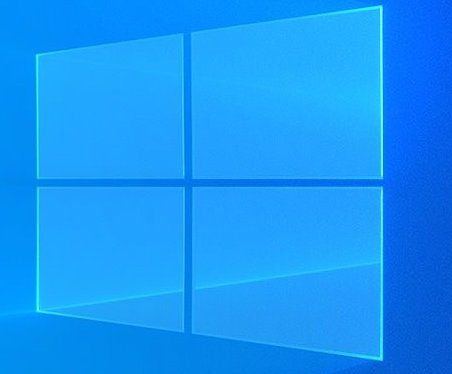

이미지 관련 태그
src속성
불러올 이미지 리소스의 경로

alt속성
이미지의 경로가 잘못되었거나 이미지를 제대로 불러올수 없을때 대체 텍스트. 시각장애인들을 위한 스크린 리더에서 이미지를 읽어주는 설명 문구.
width/height
고정길이 px 화면 사이즈와 상관없이 고정 크기
가변길이 % 화면 사이즈 또는 부모요소 사이즈에 따라 이미지 크기 조정
오디오 관련 태그
비디오 관련 태그